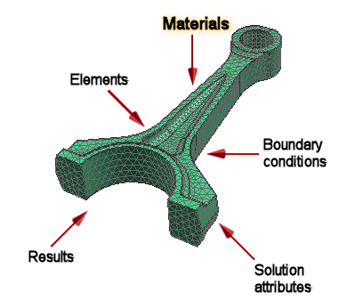

For a linear statics analysis, use isotropic materials. You need to define the following properties:
Modulus of elasticity
Poisson’s ratio
Shear modulus (for some load types)
Mass density (for some load types)
Thermal expansion (for some load types)
Reference temperature (for some load types)

For more information about materials, see Materials in the Design Simulation online Help.